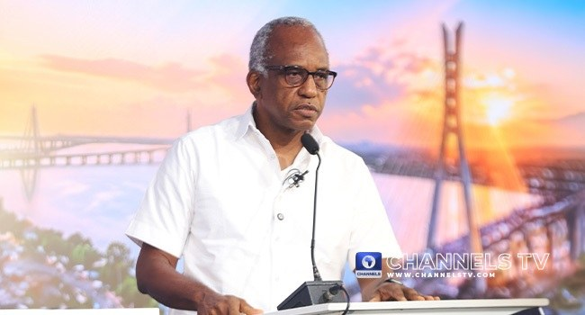

No Political Will To Deal With Agberos In Lagos, Says NDC’s Funsho Doherty

Funsho Doherty, the Nigeria Democratic Congress governorship candidate in Lagos State, said a lack of political will by successive administrations had allowed the agbero system to persist. He made the remarks during the Lagos Governorship Debate on Sunday, where he discussed reforming the state’s transport sector.
Agberos are transport touts who collect money from commercial bus drivers and other operators at motor parks, bus stops and on roads. They may claim to act for transport unions or park authorities. Doherty said powerful interests in the existing transport system had made it difficult for successive governments to address their activities.
He argued that meaningful reform would require a government accountable to residents rather than to groups that benefit from the current arrangement. Doherty said his administration would modernise transportation, presenting that goal as part of a broader break with the existing system.
The debate was organised by the Nigeria Debate Consortium, a coalition of The PUNCH, Channels Television, TVC News, TheCable and Vanguard Newspapers.
Source: Channels TV